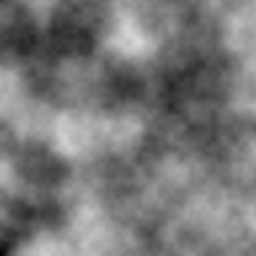
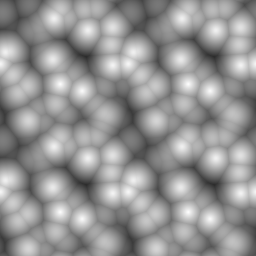
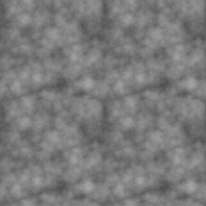

Project Overview
The volumetric clouds were made with the idea to create a dynamic and realistic looking cloudscape. Creating volumetric clouds was possible by combining generating noise textures, using raymarching techniques and utilizing the GPU compute shader to improve performance.
Generated Noise
In order to give clouds a realistic look, two noise textures had to be generated and later combined to form a final texture. Textured used here were the Perlin and Worley noises which combine their look into one.
 The result of combining those noises becomes a mix which keeps the distinct features of both: The "bubbles" of Worley noise and cloudy blur of the Perlin noise.
Generating those textures using the CPU takes a lot of time (2-3 minutes per texture in some cases) so instead, the texture generation has been moved to the GPU compute shader where the whole generation process takes less than a second.
Rendering
The clouds themselves are rendered by using the GPU's fragment shader and ray-marching. At each ray-marching interval, the shader samples the color value from the generated texture and uses the total result to determine how much light is able to pass through the cloud for that given pixel. This process is repeated for every pixel in the viewport and results in a realistic looking cloud.

float2 RayBoxDst(float3 boundsMin, float3 boundsMax, float3 rayOrigin, float3 rayDir)
{
float3 t0 = (boundsMin - rayOrigin) / rayDir;
float3 t1 = (boundsMax - rayOrigin) / rayDir;
float3 tMin = min(t0, t1);
float3 tMax = max(t0, t1);
float dstA = max(max(tMin.x, tMin.y), tMin.z);
float dstB = min(tMax.x, min(tMax.y, tMax.z));
float dstToBox = max(0, dstA);
float dstInsideBox = max(0, dstB - dstToBox);
return float2(dstToBox, dstInsideBox);
}
Texture3D ShapeNoise;
SamplerState samplerShapeNoise;
Texture2D WeatherSignal;
SamplerState samplerWeatherSignal;
float4 cloudWeights;
float3 cloudOffset;
float cloudScale;
float densityThreshold;
float densityMultiplier;
int numSteps;
int lightSteps;
float4 _LightColor0;
float lightStrength;
float maxDistance;
float SampleDensity(float3 position)
{
//Height Gradient
float3 size = BoundsMax - BoundsMin;
float heightPercentage = (position.y - BoundsMin.y) / size.y;
float4 heightGradient = WeatherSignal.SampleLevel(samplerWeatherSignal, float2(0, heightPercentage), 0);
//Density Sampling
float3 uvw = (position * cloudScale * 0.0001);
float cloudShape = ShapeNoise.SampleLevel(samplerShapeNoise, uvw, 0) * heightGradient;
if (cloudShape > 0)
{
float uvwDetail = uvw * 4;
float detailShape = ShapeNoise.SampleLevel(samplerShapeNoise, uvwDetail, 0).b;
float detailWeights = (1 - cloudShape) * (1 - cloudShape) * (1 - cloudShape);
float cloudDensity = cloudShape - (1 - detailShape) * detailWeights;
return max(0, cloudDensity - densityThreshold) * densityMultiplier * 0.01;
}
return 0;
}
float LightMarch(float3 position)
{
float3 sunDir = normalize(_WorldSpaceLightPos0.xyz);
float dstInBox = RayBoxDst(BoundsMin, BoundsMax, position, sunDir).y;
float stepSize = dstInBox / lightSteps;
float totalDensity = 0;
for (int i = 0; i < lightSteps; i++)
{
position += sunDir * stepSize;
totalDensity += SampleDensity(position) * stepSize;
}
return exp(-totalDensity * lightStrength);
}
float4 frag(v2f input) : SV_Target
{
float4 col = tex2D(_MainTex, input.uv);
//Prep data
float nonLinearDepth = SAMPLE_DEPTH_TEXTURE(_CameraDepthTexture, input.uv);
float depth = LinearEyeDepth(nonLinearDepth) * length(input.ray);
float3 origin = _WorldSpaceCameraPos;
float3 dir = normalize(input.ray);
float2 rayBoxInfo = RayBoxDst(BoundsMin, BoundsMax, origin, dir);
float dstToBox = rayBoxInfo.x;
float dstInBox = rayBoxInfo.y;
//Results
float stepSize = dstInBox / numSteps;
float dstTravelled = 0;
float transmittance = 1;
float lightReached = 0;
for (int i = 0; i < numSteps; i++)
{
if (dstTravelled >= min(depth - dstToBox, dstInBox))
break;
float3 rayPos = origin + dir * (dstToBox + dstTravelled);
float cloudDensity = SampleDensity(rayPos) * stepSize;
if (cloudDensity > 0)
{
float lightReachingPoint = LightMarch(rayPos);
lightReached += lightReachingPoint * cloudDensity * transmittance;
transmittance *= exp(-cloudDensity);
}
if (transmittance < 0.01)
break;
dstTravelled += stepSize;
}
return col * transmittance + lightReached;
}